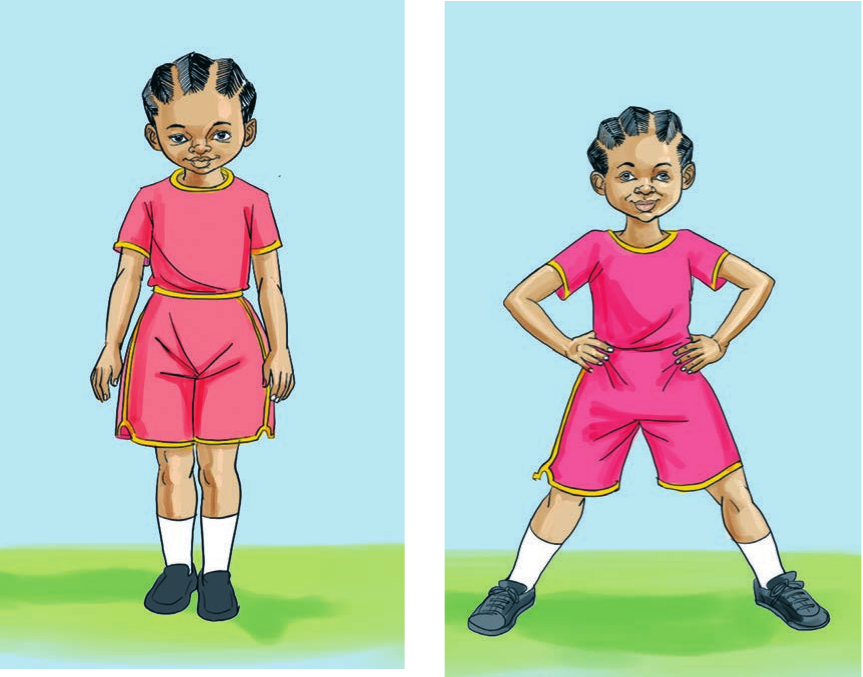
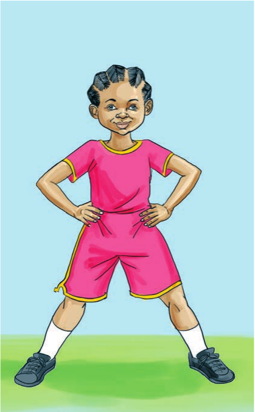

Tucheze mchezo
Kusimama kwa mguu mmoja
Hatua za kufuata
- Simama wima.
- Shika kiuno kisha nyanyua mguu.
- Achia kiuno na utawanye mikono.


Rudia hatua hizi kwa kubadilisha mguu.
Zoezi la 3
Shughuli ya kufanya 6
Fanya zoezi la kusimama kwa mguu mmoja.